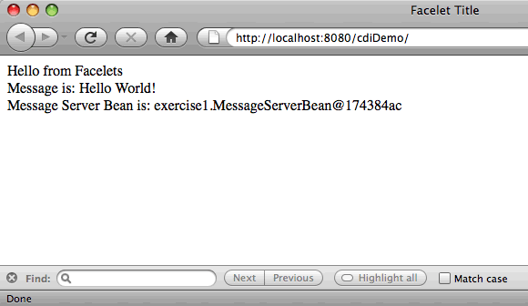

Apache NetBeans
Apache NetBeansLatest release
Общие сведения о внедрении контекстов и зависимостей и JSF 2.x
| This tutorial needs a review. You can edit it in GitHub following these contribution guidelines. |
Предоставлено Энди Гибсоном (Andy Gibson)
Внедрение контекстов и зависимостей
-
Введение в CDI и JSF 2.0
Внедрение контекстов и зависимостей (CDI), определяемое документом JSR-299, является неотъемлемой частью Java EE 6 и обеспечивает архитектуру, позволяющую компонентам Java EE (например, сервлетам, компонентам EJB и JavaBeans) существовать в жизненном цикле приложения с четко определенными контекстами. Кроме того, службы CDI позволяют компонентам Java EE (например, компонентам сеансов EJB и управляемым компонентам JavaServer Faces) внедряться и свободно взаимодействовать путем запуска и обработки событий.
Этот учебный курс основан на записи блога Энди Гибсона (Andy Gibson) Введение в JSF 2.0 и CDI в JEE 6. В нем рассматривается использование среды IDE для настройки веб-проекта Java с поддержкой JSF 2.0 и CDI. Затем описано связывание управляемых компонентов CDI со страницами Facelets и приводится краткий пример интеграции CDI и технологии EJB.
В NetBeans IDE обеспечена встроенная поддержка для внедрения контекстов и зависимостей, включая поддержку создания файла конфигурации CDI beans.xml при создании проекта, поддержку редактора и навигации для аннотаций, а также различных мастеров для создания часто используемых артефактов CD.
Для работы с этим учебным курсом требуется программное обеспечение и материалы, перечисленные ниже.
| Программное обеспечение или материал | Требуемая версия |
|---|---|
7.2, 7.3, 7.4, 8.0, пакет Java EE |
|
версия 7 или 8 |
|
Open Source Edition 3.x или 4.x |
| В комплект Java для IDE NetBeans также входит компонент GlassFish Server Open Source Edition, являющийся контейнером, совместимым с Java EE. |
Создание веб-проекта Java с поддержкой CDI
В этом упражнении выполняется создание веб-проекта Java с поддержкой JSF 2.x и CDI.
-
Нажмите кнопку 'Создать проект' (
 ) на главной панели инструментов IDE (Ctrl-Shift-N; ⌘-Shift-N в Mac).
) на главной панели инструментов IDE (Ctrl-Shift-N; ⌘-Shift-N в Mac). -
В мастере создания проекта выберите категорию Java Web и команду "Веб-приложение". Нажмите кнопку "Далее".
-
Введите
cdiDemoв качестве имени проекта и укажите местоположение проекта. Нажмите кнопку "Далее". -
Выберите GlassFish в качестве сервера.
-
В качестве версии Java EE выберите Java EE 6 или Java EE 7 Web.
| От выбранной версии Java EE зависит, какая версия CDI будет поддерживаться в приложении. Следует помнить, что между версиями CDI 1.0 и CDI 1.1 существует ряд различий. |
-
Если в качестве версии Java EE выбрана Java EE 6 Web, убедитесь, что выбран параметр "Разрешить внедрение контекстов и зависимостей". При выборе параметра "Включить внедрение контекстов и зависимостей" создается файл
beans.xmlв папке проектаWEB-INFпри создании шаблона проекта. Файлbeans.xmlиспользуется CDI для указания серверу, совместимому с Java EE, что проект является модулем, содержащим компоненты CDI. Java EE 6 Web поддерживает CDI 1.0, и в создаваемом файлеbeans.xmlбудет указана версия CDI 1.0. -
Если в качестве версии Java EE указана Java EE 7 Web, по умолчанию включается поддержка версии CDI 1.1, и файл
beans.xmlне требуется. В Java EE 7 при отсутствии файлаbeans.xmlразвертываемый архив считается архивом неявного компонента bean. Файлbeans.xmlв приложениях Java EE 7 Web создается с помощью мастера создания файлов IDE. По умолчанию развернутый архив становится архивом явного компонента bean, поскольку в файлеbeans.xmlуказывается версия CDI 1.1 и атрибутbean-discovery-modeполучает значениеall.
Подробные сведения о типах архивов CDI см. в разделе Упаковка приложений CDI в руководстве по Java EE 7.

Figure 1. Если выбран параметр CDI, он создает файл beans.xml для проекта
-
Нажмите кнопку "Далее".
-
На панели "Платформы" выберите параметр JavaServer Faces.
-
Перейдите на вкладку "Настройка" и убедитесь, что в качестве предпочтительного языка страницы выбран "Facelets". Нажмите кнопку "Завершить".
При нажатии кнопки "Завершить" в среде IDE создается проект веб-приложения и в редакторе открывается страница приветствия index.xhtml.
-
В окне "Проекты" разверните узел "Библиотеки > GlassFish Server". Вы увидите, что в этот узел автоматически добавлена библиотека
weld-osgi-bundle.jar. В состав сервера GlassFish входит Weld, который является реализацией спецификации CDI JSR-299 от JBoss.

Figure 2. Новый проект содержит файл beans.xml CDI, а библиотека GlassFish включает файл Weld JAR
Обратите внимание, что если при создании проекта была выбрана версия Java EE 6 Web, папка "Web Pages > WEB-INF" будет содержать файл beans.xml. Файл пуст, но может использоваться как альтернатива аннотациям для указания информации, связанной с компонентами, в формате XML.
Доступ к Beans из языка выражений JSF
В этом упражнении демонстрируется способ связи компонентов, управляемых CDI, со страницами Facelets с помощью синтаксиса EL.
-
В окне "Проекты" щелкните правой кнопкой узел "Исходные файлы" и выберите команду "Создать" > "Класс Java".
-
В мастере создания класса Java введите имя класса MessageServerBean и введите exercise1 в поле "Пакет". Новый пакет будет создан после завершения работы мастера. Нажмите "Готово".

Figure 3. Создайте новые классы Java с помощью мастера классов Java
Создаются новый пакет и класс, после чего класс открывается в редакторе.
-
Добавьте к классу аннотации
@Namedи@Dependentи создайте одиночный метод для возврата строки.
package exercise1;
*import javax.enterprise.context.Dependent;
import javax.inject.Named;*
*@Dependent
@Named*
public class MessageServerBean {
*public String getMessage() {
return "Hello World!";
}*
}Во время добавления аннотаций @Dependent и @Named нажмите сочетание клавиш Ctrl-Пробел, чтобы включить в редакторе поддержку автозавершения кода и документации Javadoc. Если применить аннотацию с помощью функций автозавершения кода редактора (например, выбрав подходящую аннотацию и нажав ENTER), в файл автоматически добавляется оператор `импорта `. Во всплывающем окне Javadoc также можно нажать кнопку 'Показывать документацию во внешнем веб-браузере' (  ) для отображения полноразмерного Javadoc в отдельном окне.
) для отображения полноразмерного Javadoc в отдельном окне.
Аннотация @Dependent определяет область действия управляемого компонента bean. В архиве неявного компонента bean управляемый компонент bean доступен только для обнаружения и может управляться контейнером, только если указана область действия. В данном упражнении приложение будет упаковано как архив неявного компонента bean (при условии, что в качестве версии проекта выбрана Java EE 7 и не создан файл beans.xml ). Подробные сведения об области действия управляемых компонентов bean см. в разделе Настройка управляемых компонентов bean с помощью аннотаций учебного курса по Java EE 7.
|
-
Сохраните файл (сочетание клавиш Ctrl-S; ⌘-S в Mac). После добавления аннотации
@NamedклассMessageServerBeanстал _ управляемым компонентом _, в соответствии с определением CDI. -
Переключитесь в редакторе на страницу Facelets
index.xhtml(нажмите сочетание клавиш CTRL+TAB) и добавьте следующий текст в теги<h:body>.
<h:body>
Hello from Facelets
*<br/>
Message is: #{messageServerBean.message}
<br/>
Message Server Bean is: #{messageServerBean}*
</h:body>
Для отображения подсказок автозавершения кода можно нажать сочетание клавиш CTRL+ПРОБЕЛ внутри выражения EL. Списки автозавершения редактора содержат управляемые компоненты и их свойства. Поскольку аннотация @Named преобразует класс MessageServerBean в управляемый компонент, он становится доступным в синтаксисе EL, как если бы он был управляемым компонентом JSF.#
|

Figure 4. Создайте новые классы Java с помощью мастера классов Java
-
Нажмите кнопку 'Запустить проект' (
 ) на главной панели инструментов IDE. Файл компилируется и развертывается в GlassFish, и страница приветствия приложения (
) на главной панели инструментов IDE. Файл компилируется и развертывается в GlassFish, и страница приветствия приложения (index.xhtml `) отображается в веб-браузере. На странице отображается текст "Hello World!" из `MessageServerBean.

Figure 5. На странице приветствия приложения отображаются сведения о MessageServerBean
-
Вернитесь к компоненту сообщения и измените сообщение на другое (например, "Hello Weld!"). Сохраните файл (Ctrl-S; ⌘-S в Mac), затем обновите браузер. Автоматически отображается новое сообщение. Это происходит благодаря возможности "Развертывание при сохранении" среды IDE, все сохраненные изменения вызывают компиляцию и повторное развертывание на сервере.
В третьей строке на этой странице видно, что имя класса – exercise1.MessageServerBean Обратите внимание, что компонент представляет собой объект POJO (Plain Old Java Object, простой старый объект Java). Несмотря на использование Java EE, при разработке отсутствует комплексная иерархия классов, связанная уровнями транзакций, перехватами и другие сложные особенности.
Порядок действий
При развертывании приложения сервер осуществляет поиск управляемых bean-компонентов CDI. В приложениях Java EE 7 классы на пути по умолчанию проверяются на наличие аннотаций CDI. В приложениях Java EE 6 классы проверяются на наличие аннотаций CDI, если модуль содержит файл beans.xml. В модуле CDI все компоненты регистрируются в Weld, и для сопоставления компонентов с точками внедрения используется аннотация @Named. При отображении страницы index.xhtml JSF пытается разрешить значение messageServerBean на странице с применением зарегистрированных средств разрешения выражений JSF. Одно из них – средство разрешения Weld EL имеет класс MessageServerBean, зарегистрированный под именем MessageServerBean Можно было указать другое имя в аннотации @Named, но поскольку это не было сделано, класс был зарегистрирован под именем по умолчанию, которое совпадает с именем класса, первая буква которого находится в нижнем регистре. Средство разрешения Weld возвращает экземпляр этого компонента в ответ на запрос JSF. Именование компонентов требуется только при использовании выражений EL и не должно использоваться в качестве механизма внедрения, поскольку CDI обеспечивает безопасность по типу при внедрении по типу класса и аннотациям квалификатора.
Переход к EJB
Благодаря EJB 3.1 и использованию стека Java EE можно с небольшими изменениями легко развертывать компонент в качестве EJB.
-
Откройте
MessageServerBeanи добавьте аннотациюjavax.ejb.Statelessна уровне класса, затем замените строку на "Hello EJB!".
package exercise1;
*import javax.ejb.Stateless;*
import javax.enterprise.context.Dependent;
import javax.inject.Named;
/**
*
* @author nbuser
*/
@Dependent
@Named
*@Stateless*
public class MessageServerBean {
public String getMessage() {
return "*Hello EJB!*";
}
}-
Сохраните файл (Ctrl-S; ⌘-S в Mac), затем перейдите в браузер и обновите. Отображается приблизительно следующее:

Figure 6. Использование аннотации @Stateless преобразует MessageServerBean в EJB
Поразительно, POJO превратился в полнофункциональный EJB с помощью всего одной аннотации. После сохранения изменений и обновления страницы были отображены изменения. Для этого не потребовалось проводить комплексную настройку проекта, создавать локальные интерфейсы или сложные дескрипторы развертывания.
Различные типы EJB
Также можно использовать аннотацию @Stateful. В качестве альтернативы можно использовать новую аннотацию @Singleton для экземпляров единичных классов. При этом существует две аннотации: javax.ejb.Singleton и javax.inject.Singleton. Эти аннотации соответствуют двум видам единичных классов. Единичный класс CDI javax.inject.Singleton позволяет определить экземпляр единичного класса вне EJB при использовании CDI в окружении, отличном от EJB. Единичный класс EJB javax.ejb.Singleton предоставляет все возможности EJB, например управление транзакциями. Поэтому можно сделать выбор в зависимости от потребностей и от того, используется ли среда EJB.
Дополнительные сведения
В следующей части рассматривается внедрение CDI и приводятся подробные сведения об использовании CDI для управления зависимостями в среде Java EE.
Дополнительные сведения о CDI и JSF 2.0 приведены в следующих материалах.